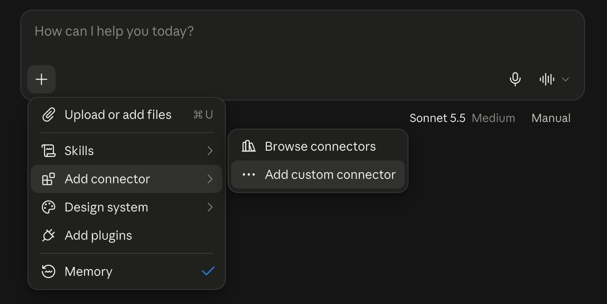
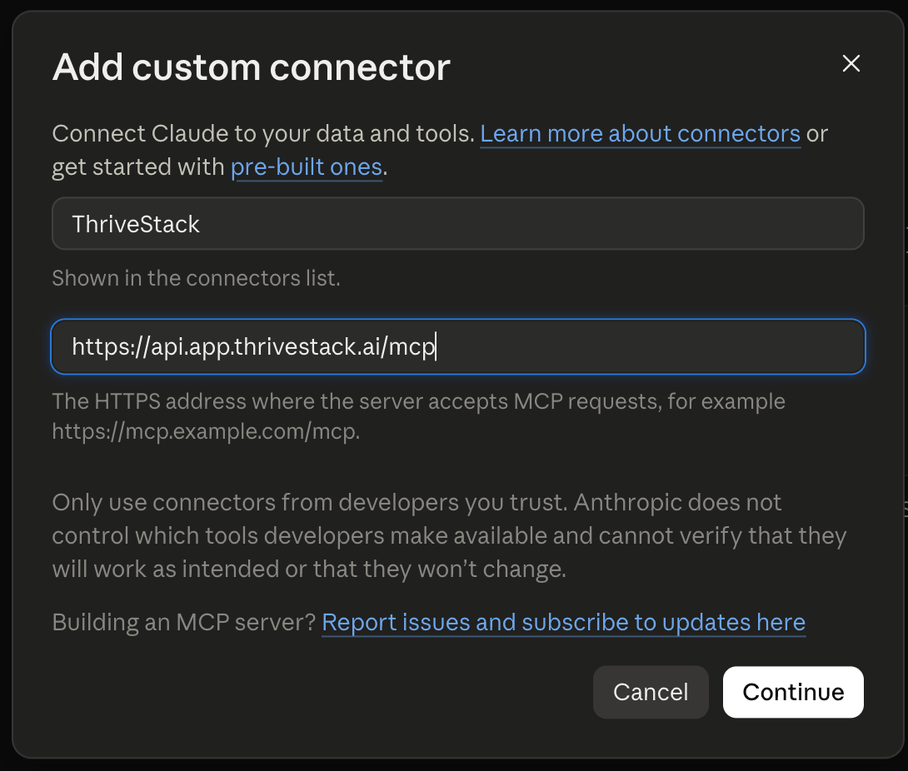
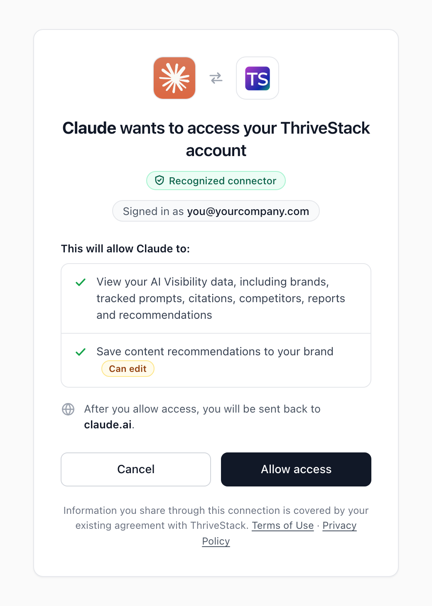

Setup Guide
Step-by-step instructions for connecting the ThriveStack MCP server to Claude, Cursor and other AI tools. Need help? Email support@thrivestack.ai.
Server URL
Every platform uses the same URL. The server is available to existing ThriveStack customers.
https://api.app.thrivestack.ai/mcp
Authentication options
The server supports two authentication methods. Choose based on what your client supports.
OAuth
RecommendedThe first connection sends you to ThriveStack to sign in and allow access. Your session persists across conversations.
Personal Access Token
AlternativeA long-lived token tied to your ThriveStack account, sent as an Authorization: Bearer header. It acts as you across every brand your account can access.
Connect your client
Choose your AI tool. Each guide uses OAuth where your client supports it.
ThriveStack isn’t in Claude’s connector directory yet, so you add it as a custom connector using the server URL above. For more detail, see Claude’s guide to custom connectors.
Connect with OAuth Recommended
-
Open the connector menu
In Claude (the desktop app or claude.ai), click + in the message box, then choose Add connector → Add custom connector. You can also manage connectors from Settings (or Customize) → Connectors.

Click +, then Add connector → Add custom connector. -
Enter the server details
Enter a name and the server URL, then click Continue:
- Name: ThriveStack (or any name you like)
- MCP server URL:
https://api.app.thrivestack.ai/mcp

The name is only a label in your connectors list. -
Sign in and allow access
Claude opens ThriveStack in your browser. Sign in, review the permissions, and click Allow access. The consent screen shows which app is asking and what it can do.

ThriveStack’s consent screen. -
Start asking questions
You’re sent back to Claude and ThriveStack appears in your connectors. Try the question under Verify your connection.


Using a Claude workspace? Only workspace admins can add custom connectors. If you can’t, ask your admin.
Use a Personal Access Token instead
Add this to ~/Library/Application Support/Claude/claude_desktop_config.json, replacing YOUR_PAT_TOKEN with your token. Need a token?
{
"mcpServers": {
"thrivestack": {
"command": "npx",
"args": [
"-y", "mcp-remote", "https://api.app.thrivestack.ai/mcp",
"--header", "Authorization: Bearer YOUR_PAT_TOKEN"
]
}
}
}For general MCP setup, see the Claude Code MCP documentation.
Connect with OAuth Recommended
-
Add the server
Run this once:
Shellclaude mcp add --transport http --scope user Thrivestack "https://api.app.thrivestack.ai/mcp" -
Sign in
Start
claude, run/mcp, and select ThriveStack to sign in and allow access.
Use a Personal Access Token instead
Replace YOUR_PAT_TOKEN with your token:
claude mcp add --transport http --scope user Thrivestack "https://api.app.thrivestack.ai/mcp" --header "Authorization: Bearer YOUR_PAT_TOKEN"Then start Claude Code:
claudeFor general MCP setup, see Cursor’s MCP documentation.
Connect with OAuth Recommended
-
Open MCP settings
Go to Cursor Settings → Tools & Integrations → MCP.
-
Add the server
Click Add Custom MCP and paste this configuration:
JSON{ "mcpServers": { "thrivestack": { "url": "https://api.app.thrivestack.ai/mcp" } } } -
Sign in
When Cursor shows ThriveStack as needing login, click Connect, sign in to ThriveStack, and click Allow access.
Use a Personal Access Token instead
In the same MCP settings, click Add Custom MCP and paste this configuration, replacing YOUR_PAT_TOKEN with your token:
{
"mcpServers": {
"thrivestack": {
"url": "https://api.app.thrivestack.ai/mcp",
"headers": { "Authorization": "Bearer YOUR_PAT_TOKEN" }
}
}
}Set the transport type to Streamable HTTP.
Connect with OAuth Recommended
-
Create the config file
Create
.vscode/mcp.jsonin your project, or run MCP: Open User Configuration to edit your user-level config:.vscode/mcp.json{ "servers": { "thrivestack": { "type": "http", "url": "https://api.app.thrivestack.ai/mcp" } } } -
Start the server and sign in
Start the server from the editor. When prompted, sign in to ThriveStack and click Allow access.
Use a Personal Access Token instead
Use the same file and add your token, replacing YOUR_PAT_TOKEN. Need a token?
{
"servers": {
"thrivestack": {
"type": "http",
"url": "https://api.app.thrivestack.ai/mcp",
"headers": { "Authorization": "Bearer YOUR_PAT_TOKEN" }
}
}
}Windsurf connects with a Personal Access Token. If you don’t have one yet, create one first.
-
Open MCP settings
Go to Windsurf Settings → MCP.
-
Add the server
Click Add Server and paste this configuration (the same format as Cursor), replacing
YOUR_PAT_TOKENwith your token:MCP config{ "mcpServers": { "thrivestack": { "url": "https://api.app.thrivestack.ai/mcp", "headers": { "Authorization": "Bearer YOUR_PAT_TOKEN" } } } }
Gemini CLI connects with a Personal Access Token. If you don’t have one yet, create one first. For general MCP setup, see the Gemini CLI documentation.
-
Add the server
Add this to
~/.gemini/settings.json, replacingYOUR_PAT_TOKENwith your token:~/.gemini/settings.json{ "mcpServers": { "thrivestack": { "httpUrl": "https://api.app.thrivestack.ai/mcp", "headers": { "Authorization": "Bearer YOUR_PAT_TOKEN" } } } } -
Restart Gemini CLI
Restart Gemini CLI so it loads the MCP server.
The ThriveStack MCP server uses Streamable HTTP and works with any client that supports the MCP standard. If your client doesn’t support OAuth, send a Personal Access Token as an Authorization: Bearer YOUR_PAT_TOKEN header.
-
Set the server URL
Configure your client’s MCP server URL to
https://api.app.thrivestack.ai/mcp. -
Authenticate
If your client supports OAuth, sign in when prompted. Otherwise, make sure it can send custom HTTP headers and set
AuthorizationtoBearer YOUR_PAT_TOKEN, using a token from your dashboard. -
Start asking questions
Connect if your client asks you to, then use the ThriveStack tools from your AI tool.
Create a Personal Access Token
Needed for clients without OAuth support, and for headless or CI setups.
Open the tokens page
Go to Personal Access Tokens in ThriveStack (AI Visibility → Settings → Personal Access Tokens), or follow the link on the Connect via MCP page.
Generate a token
Click Generate new token, give it a name you’ll recognize later (for example “Cursor laptop”), and choose an expiry.
Copy the token
Copy it right away. It’s shown only once and starts with
tsmcp_.
Treat it like a password. Anyone with the token can act as you across every brand your account can access.
A token acts as your user, so every request respects the same permissions as your dashboard session. You can revoke a token at any time from Personal Access Tokens; clients using it lose access immediately.
Verify your connection
After setup, try asking your AI assistant:
You should get a visibility report for your brand. If you do, you’re all set.
Troubleshooting
“Authorization failed” or “Unauthorized”
- Make sure you signed in with the right ThriveStack account.
- Remove the connector and add it again.
- Clear your browser cookies for
app.thrivestack.aiand try again. - Using a token? Check that it hasn’t expired or been revoked under Personal Access Tokens, and that your client sends the
Authorization: Bearerheader.
Missing data
- Check that your account has access to the product and environment you’re asking about, and that the data exists.
Tool not found
- Available tools depend on the server version. See Tools for the current list, then reconnect your client to refresh its tool list.
Queries timing out
- Ask a narrower question or use a shorter date range.
Connection timeout
- Check your internet connection.
- Make sure the URL is exactly
https://api.app.thrivestack.ai/mcp.
Still stuck? Email support@thrivestack.ai.